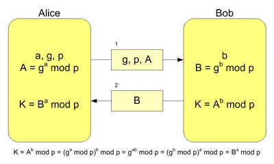
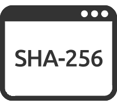

Scambio di chiavi
Diffie-Hellman
Certificate Authority
Lo scopo di questo ente è quello di combattere un attacco di tipo "men in the middle".
È un'autorità che rilascia certificati digitali, necessari per le connessioni protette per certificare e constatare la validità della chiave usata e di chi la sta usando.
Questo ente utilizza la crittografia a chiave asimmetrica.
Hash
In inglese, to hash prende significato di sminuzzare, pasticciare mentre in informatica, indica una funzione non iniettiva che mappa una stringa di lunghezza arbitraria in una stringa di lunghezza predefinita.
